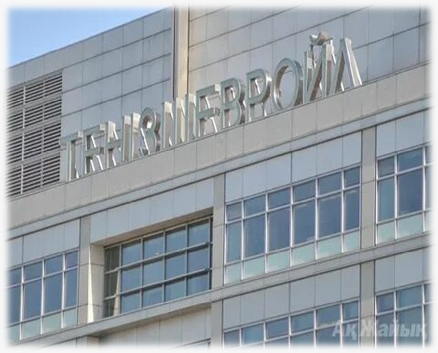
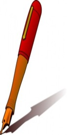

6-ТАПСЫРМА
«Шеврон» – Қазақстанның сенімді серіктесі
I. Теория
Мақсаты: «Шеврон» компаниясы туралы ақпаратты меңгеру, Қазақстан аумағындағы алар орнын, әлеуметтік-экономикалық жағдайға тигізген әсерін меңгерту.
Міндеттері: «Шеврон» - Қазақстанның сенімді серіктесі ретінде таныту.
Бағалау критерийлері: Арнайы мәтіндердегі мақсатты аудиторияға арналған терминдер мен ұғымдарды, тілдік оралымдарды талдайды.
Дәрістің қысқаша тезистері
«Шеврон» – Қазақстанның сенімді серіктесі
Мұнай-газ өнеркәсібі қызметінің барлық салаларына: көмірсутектерді барлауға, өндіруге, тасымалдауға және өткізуге қатысатын, сонымен қатар мұнай-химия өнімдерін өндірумен, оларды бөлшек сауда бағасымен сату ісімен айналысатын «Шеврон» компаниясының дүниежүзілік мұнай өндіру саласында үлесі мол.
1873 жылы Лос-Анжелесте (АҚШ) құрылған «Шеврон» компаниясы қазір әлемнің 90-нан астам мемлекетінде жұмыс істейді. 23 елде мұнай мен табиғи газ өндіреді, олардың ішінде Қазақстан да бар. Қазақстанда компания – «Теңізшевройл» бірлескен кәсіпорнының басты құрылтайшысы. 1993 жылы 6 сәуірде ҚР Президенті мен «Шеврон» директорлар кеңесінің төрағасы Кеннет Дерр «Теңізшевройл» бірлескен кәсіпорнын құру туралы келісімге қол қойған-ды.

1-сурет: «Шеврон» компаниясы
2-сурет: «Теңізшевройл» кәсіпорны

3-сурет: Мұнай өндірісі
2018 жылы «Теңізшевройл» кәсіпорнының Қазақстанда жұмыс істеп келе жатқанына 25 жыл толды. Осы уақыт ішінде «Шеврон» Қазақстанның ең ірі әрі сенімді инвесторларының біріне айналды. Аталмыш корпорация, салықпен бірге есептегенде, елімізге 123 млрд АҚШ доллары көлемінде инвестиция құйды.
Бақылау сұрақтары:
- «Шеврон» – Қазақстанның сенімді серіктесі дегенді қалай түсінесің?
- «Шеврон» компаниясының құрылған жылы?
- Аталған компанияның елімізге әкелген инвестиция көлемі?
Тапсырманы орындау бойынша нұсқаулық (орындау тәртібі):
- Мәтінді түсініп оқиды, түсінгенін айтады;
- Сұрақтарға жауап береді.
Тапсырмадан күтілетін нәтиже: Берілген ақпаратты оқу, сұрақтарға жауап беру.
Тапсыру формасы: Ауызша түрде.
Модуль / пән бойынша ұсынылатын әдебиеттер тізіміне сілтемелер: Okulyk.kz - Қазақ тілі (10-сынып)
II. Практика (СӨЖ № 6.2)
1-тапсырма. Графиктік мәтін құрастыру
Тапсырма: «Шеврон» – Қазақстанның сенімді серіктесі» мәтінінде берілген ақпаратты графиктік мәтін түрінде жазыңдар.
Тапсырманы орындау бойынша нұсқаулық:
- Мәтінді оқиды;
- Мәтінде берілген ақпаратты графиктік мәтінге айналдырады.
2-тапсырма. Дискуссивті эссе жазу
Тапсырма: «Қазақстан индустриясы дамыған алпауыт елге айнала ма?» тақырыбында дискуссивті эссе жазыңдар. (көлемі 200-250 сөз)
Тапсырманы орындау бойынша нұсқаулық:
- Эссе мазмұны мәлімделген тақырыпқа сәйкес болады;
- Жұмыста автордың көзқарасының болуы шарт;
- Барлық тұжырымдар негізделіп, дәлелденуі керек.
Тапсыру формасы: Жазбаша түрде.
Модуль / пән бойынша ұсынылатын әдебиеттер тізіміне сілтемелер: Okulyk.kz - Қазақ тілі (10-сынып)
III. Бағалау парағы
| № | Тапсырма | Дескрипторлар | Ұпай саны | Студенттің ұпай саны |
|---|---|---|---|---|
| 1 | Бақылау сұрақтары: |
• Мәтінді түсініп оқиды, түсінгенін айтады • Сұрақтарға жауап береді |
5 балл 5 балл |
|
| 2 | «Шеврон» – Қазақстанның сенімді серіктесі» мәтінінде берілген ақпаратты графиктік мәтін түрінде жазыңдар. |
• Мәтінді оқиды; • Мәтінде берілген ақпаратты графиктік мәтінге айналдырады |
5 балл 20 балл |
|
| 3 | «Қазақстан индустриясы дамыған алпауыт елге айнала ма?» тақырыбында дискуссивті эссе жазыңдар. (көлемі 200-250 сөз) |
• Эссе мазмұны мәлімделген тақырыпқа сәйкес болады; • Жұмыста автордың көзқарасының болуы шарт; • Барлық тұжырымдар негізделіп, дәлелденуі керек |
20 балл 20 балл 20 балл |
|
| Барлығы: | 100 балл | / 100 | ||